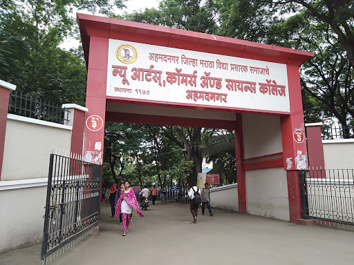
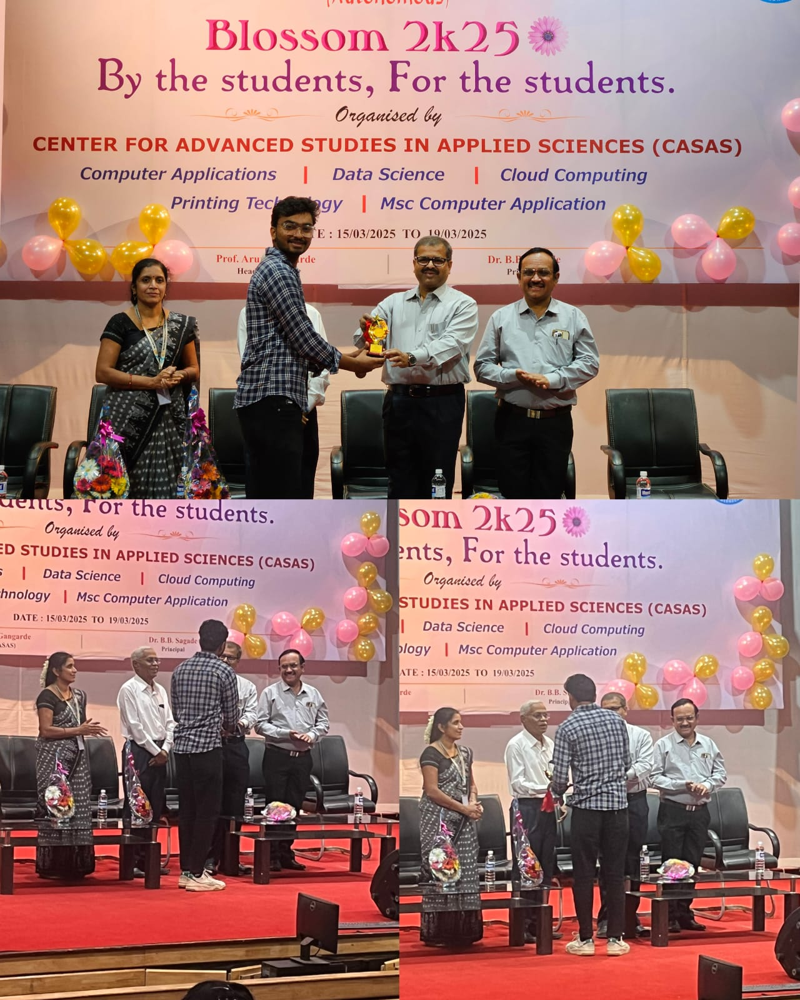
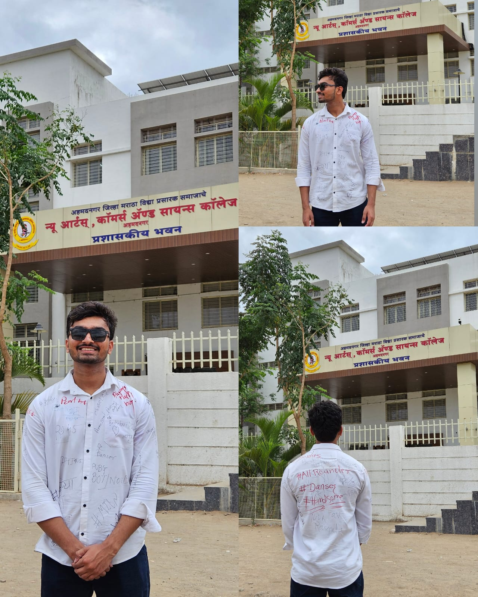
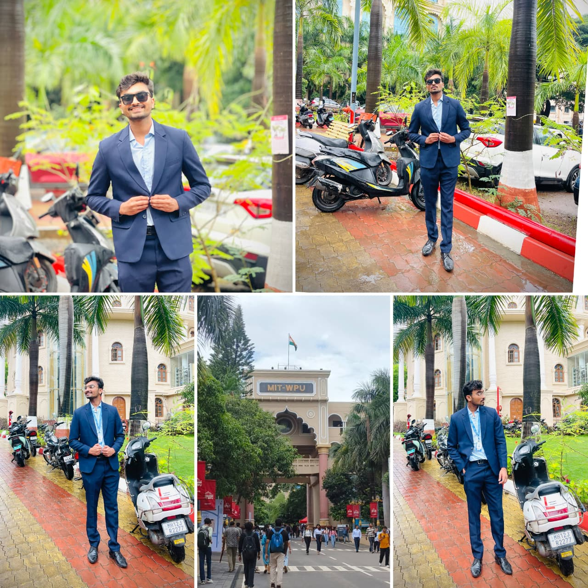

My academic and professional journey.
Started my Bachelor of Computer Applications (Science) at New Arts, Commerce and Science College, Ahmednagar, Maharashtra.

Received Best Sport Person and Best Volunteer awards for sports and college event contributions.

Successfully completed Bachelor of Computer Applications with strong foundation in programming, databases, and software development.

Started Master of Computer Applications at MIT World Peace University, Pune to advance skills in Software Development.
